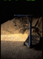
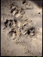
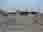
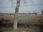
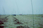

Japan
Universe
M101 327Kb
M42 97Kb
M82 736Kb
M51 68Kb
NGC4565 87Kb
M81 166Kb
M31 84Kb
Saturn 32Kb
Japan
Fuderindo(Toka-ichiba) 29Kb
A Japanese squirrel somewhere 30Kb
A tit 30Kb
A woodpecker 30Kb
China 2004

A balance at a bio-briquette factory, Shenyang 340Kb
Bio-coal briquettes at a bio-briquette factory, Shenyang 405Kb
A night in Shenyang 3 425Kb
Piggies 671Kb
A dirty piggy 526Kb

Desertification in the field 740Kb
Soil damaged by alkali salt 805Kb
China 2001-2
Chengdu mums 23Kb
Chengdu Children 30Kb

A house in Kangping-xian 36Kb

Leeks in Kangping-xian 38Kb
Before forestation in Kangping-xian 20Kb

After forestation in Kangping-xian 31Kb
Children help watering in Kangping-xian 1 29Kb
Children help watering in Kangping-xian 2 24Kb
Corn Fields close to the trees planted 36Kb
Three Years After 74Kb
Donkeys 70Kb
A Night in Shenyang 1 38Kb
A Night in Shenyang 2 38Kb
Italy
Macerata 12Kb
Hitoshi Hayami web site